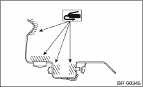

BRAKE > Rear Brake Pad
1. Apply a thin coat of Molykote M7439 to the pad clip.

CAUTION:
Replace the pad if there is oil or grease adhering to the pad surface.
2. Install the pad to support.
3. Install the caliper body to the support.
Tightening torque:
37 N·m (3.8 kgf-m, 27.3 ft-lb)
NOTE:
If it is difficult to push the piston during pad replacement, loosen the air bleeder to facilitate work.